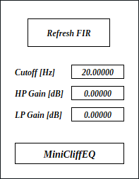

full - VST 3 をダウンロード (github.com) macOS - VST 3 をダウンロード (github.com) Update: 2024-08-21

MiniCliffEQ はタップ数 2^15 = 32768 の FIR フィルタです。初期バージョンからは改善しましたが、それでもタップ数が多いのでレイテンシがサンプリング周波数 48000 Hz のときに 0.34 秒を超えます。主な用途は直流信号 (DC) の抑制ですが、とても急峻なローパス、ハイパス、ローシェルフ、ハイシェルフフィルタとしても使えます。
full - VST 3 をダウンロード (github.com) macOS - VST 3 をダウンロード (github.com) full パッケージには次のビルドが含まれています。
Linux ビルドは Ubuntu 22.04 でビルドしています。もし Ubuntu 22.04 以外のディストリビューションを使っているときは、プラグインが読み込まれないなどの不具合が起こることがあります。この場合はビルド手順に沿ってソースコードからビルドしてください。
macOS で使用するときは macOS
パッケージのダウンロードを推奨します。また Apple Developer Program
に加入していないので、インストール時に Gatekeeper
を迂回するように設定する必要があります。詳細は
インストール -> macOS
の節を参照してください。
何かあれば GitHub
のリポジトリに issue を作るか ryukau@gmail.com
までお気軽にどうぞ。
paypal.me/ryukau から開発資金を投げ銭することもできます。
名前が .vst3 で終わるディレクトリを OS
ごとに決められた位置に配置してください。
/Program Files/Common Files/VST3/
に配置します。$HOME/.vst3/ に配置します。/Library/Audio/Plug-ins/VST3/ あるいは
/Users/$USERNAME/Library/Audio/Plug-ins/VST3/
に配置します。DAW によっては上記とは別に VST3 をインストールできるディレクトリを提供していることがあります。詳しくは利用している DAW のマニュアルを参照してください。
注意: プリセットの無いプラグインもあります。
プリセットはページの最上部のリンクからダウンロードできるプラグインパッケージに含まれています。以下はプリセットのインストール手順です。
presets ディレクトリ内の Uhhyou
ディレクトリを OS ごとに決められたディレクトリに配置。以下は OS ごとのプリセットの配置先の一覧です。
/Users/$USERNAME/Documents/VST3 Presets$HOME/.vst3/presets/Users/$USERNAME/Library/Audio/Presetsプリセットディレクトリの名前はプラグインと同じである必要があります。配置先のディレクトリが無いときは作成してください。
プラグインが DAW に認識されないときは C++ redistributable
をインストールしてみてください。インストーラは次のリンクからダウンロードできます。ファイル名は
vc_redist.x64.exe です。
Ubuntu 22.04 では次のパッケージのインストールが必要です。
sudo apt install libxcb-cursor0 libxkbcommon-x11-0もし DAW がプラグインを認識しないときは、下のリンクの
Package Requirements を参考にして VST3
に必要なパッケージがすべてインストールされているか確認してください。
REAPER の Linux 版がプラグインを認識しないときは
~/.config/REAPER/reaper-vstplugins64.ini を削除して
REAPER を再起動してみてください。
重要: full
パッケージは動作未確認です。以下のファイルは codesign
されていないので削除する必要があるかもしれません。
Contents/Resources/DocumentationContents/x86_64-linuxContents/x86_64-winmacOS
パッケージでは上記のファイルの削除は不要です。また、すべてのパッケージは
codesign コマンドの ad-hoc signing
の状態になっています。
プラグインの初回起動時に「破損している」という趣旨のメッセージが表示されることがあります。この場合は、ターミナルを開いて、解凍した
.vst3
ディレクトリに次のコマンドのどちらか、あるいは両方を適用してみてください。
/path/to/PluginName.vst3
の部分はインストールしたプラグインのパスに置き換えてください。
xattr -rd com.apple.quarantine /path/to/PluginName.vst3
xattr -rc /path/to/PluginName.vst3プラグインは署名されていない (unsigned) 、または公証されていない (un-notarized) アプリケーションとして認識されることがあります。この場合は、警告メッセージが表示された後に、システム環境設定を開いて「セキュリティとプライバシー」 → 「一般」の「このまま開く」ボタンを押してください。以下にリンクした Apple 公式のヘルプページにスクリーンショット付きで同じ手順が掲載されています。「ノータリゼーションを受けていない App や未確認の開発元の App を開きたい場合」を参照してください。
ここまでの手順を経てまだ動かないときはインストール先を
/Library/Audio/Plug-ins/VST3/ あるいは
/Users/$USERNAME/Library/Audio/Plug-ins/VST3/
のいずれか使っていなかったほうに変えてみてください。
上記の方法がすべて上手くいかなかったときは以下の手順を試してみてください。
sudo spctl --master-disable
を実行。上記の手順を実行するとシステムのセキュリティが弱くなるので注意してください。元に戻すには以下の手順を実行してください。
sudo spctl --master-enable
を実行。codesign
の適用注意 この節の内容は macOS
パッケージには関連しないと考えられますが未検証です。 (GitHub の
issue)
full
パッケージを利用する場合は以下のコマンドを適用することで利用できるかもしれません。
sudo codesign --force --deep -s - /path/to/PluginName.vst3codesign の利用には Xcode
のインストールが必要となるかもしれません。
初回設定時は手動で次のファイルを作成してください。
/Users/ユーザ名/AppData/Roaming/UhhyouPlugins/style/style.json
。$XDG_CONFIG_HOME/UhhyouPlugins/style/style.json 。
$XDG_CONFIG_HOME が空のときは
$HOME/.config/UhhyouPlugins/style/style.json 。/Users/$USERNAME/Library/Preferences/UhhyouPlugins/style/style.json
。プラグインのウィンドウを開くたびに style.json
が読み込まれて更新されます。
既存の色のテーマを次のリンクに掲載しています。
style.json にコピペして使ってください。
style.json の設定例です。
{
"fontFamily": "Tinos",
"fontBold": true,
"fontItalic": true,
"foreground": "#000000",
"foregroundButtonOn": "#000000",
"foregroundInactive": "#8a8a8a",
"background": "#ffffff",
"boxBackground": "#ffffff",
"border": "#000000",
"borderCheckbox": "#000000",
"borderLabel": "#000000",
"unfocused": "#dddddd",
"highlightMain": "#0ba4f1",
"highlightAccent": "#13c136",
"highlightButton": "#fcc04f",
"highlightWarning": "#fc8080",
"overlay": "#00000088",
"overlayHighlight": "#00ff0033"
}以下はフォントオプションの一覧です。
fontFamily: フォントファミリ名。fontBold: ボールドスタイル (太字) を
true で有効、 false で無効。fontItalic: イタリックスタイル (斜体) を
true で有効、 false で無効。カスタムフォントを使用するには、プラグインディレクトリの
*.vst3/Contents/Resources/Fonts に *.ttf
ファイルを配置します。
注意: fontFamily 、
fontBold 、 fontItalic
で設定したフォントファミリ名とスタイルの組み合わせが
*.vst3/Contents/Resources/Fonts 以下のいずれかの
*.ttf ファイルに含まれていないときは VSTGUI
が指定するデフォルトフォントが使用されます。
fontFamily が長さ 0 の文字列 ""
のときはフォールバックとして "Tinos"
に設定されます。長さが 1
以上かつ、存在しないフォントファミリ名が指定されると VSTGUI
が指定するデフォルトフォントが使用されます。
ボールドあるいはイタリック以外のスタイルは VSTGUI がサポートしていないので動作確認していません。該当する例としては Noto フォントの Demi Light や、 Roboto フォントの Thin や Black などがあります。
16 進数カラーコードを使っています。
プラグインはカラーコードの 1 文字目を無視します。よって
?102938 や \n11335577
も有効なカラーコードです。
2 文字目以降のカラーコードの値に 0-9a-f
以外の文字を使わないでください。
以下は設定できる色の一覧です。設定に抜けがあるとデフォルトの色が使われます。
foreground: 文字の色。foregroundButtonOn:
オンになっているボタンの文字の色。 foreground か
boxBackground
のいずれかと同じ値にすることを推奨します。foregroundInactive:
非アクティブなタブの文字の色。background: 背景色。boxBackground: 矩形の UI 部品の内側の背景色。border: 縁の色。borderCheckbox: チェックボックスの縁の色。borderLabel:
パラメータセクションのラベルの左右の直線の色。unfocused:
つまみがフォーカスされていないときの色。highlightMain:
フォーカスされたときの色。スライダの値の表示にも使用されます。highlightAccent:
フォーカスされたときの色。一部のプラグインをカラフルにするために使用されます。highlightButton:
ボタンがフォーカスされたときの色。highlightWarning: 変更に注意を要する UI
がフォーカスされたときの色。overlay: オーバーレイの色。overlayHighlight:
フォーカスを示すオーバーレイの色。パラメータが割り当てられているコントロールの上で 右クリック すると、 DAW から提供されるコンテキストメニューが開きます。
つまみと数値スライダでは次の操作ができます。
2^15 / 2 - 1 = 16383
サンプルのレイテンシが加わります。 S/N 比はおよそ -120 dB です。
MiniCliffEQ の用途としては直流 (DC) の除去と、細かいノイズの検出を考慮しています。線形位相フィルタなのでバンドスプリッタとして使うこともできます。もちろん音を作る用途にも使えますが、レイテンシが大きいので通常のイコライザで足りる場面では使わないことを推奨します。
直流を除去するときは起動直後に LP Gain を 2 回
ホイールクリック して -inf
に設定してください。 Cutoff
は普通のスピーカであれば初期値の 20 Hz のままで問題ありません。 10 Hz
を下回るとカットオフ周波数の正確さとロールオフの急峻さが損なわれる点に注意してください。
Cutoff が 1 Hz のときの振幅特性は 1 Hz で -16.25 dB 、
0.1 Hz で -60 dB です。
細かいノイズの検出を行うときは以下の手順を踏みます。
LP Gain を -inf に設定する。Cutoff を上げる。
Refresh FIR を忘れずに！HP Gain を 144.5 に設定する。例えば上記の設定に 100 Hz のサイン波を入力して何らかの音が出るときはノイズが乗っていると言えます。ただしゲインを 144.5 dB 上げてようやく聞こえるノイズというのは人間の耳には知覚されることはまずありません。このようなノイズ検出は音の品質を探るというよりも、アルゴリズムを推定するときに使えます。
MiniCliffEQ のフィルタ係数を計算するアルゴリズムは以下の Python 3 のコードと同じです。
import scipy.signal as signal
samplerate = 48000
cutoffHz = 20
fir = signal.firwin(2**15 - 1, cutoffHz, window="nuttall", fs=samplerate)Cutoff の変更後に Refresh FIR
ボタンを押すことで FIR フィルタ係数を更新します。
Refresh FIR
ボタンを押すと内部状態がリセットされて、レイテンシの長さだけ音が止まるので注意してください。
フィルタのカットオフ周波数です。
ハイパス出力のゲインです。
ローパス出力のゲインです。
style.json
によりプラグインがクラッシュするバグを修正。foregroundInactive の色を変更。processContext が nullptr であるために
Audacity で音が正しく出力されなかったバグを修正。virtual を追加。std::accumulate を使うように変更。MiniCliffEQ のライセンスは GPLv3 です。 GPLv3 の詳細と、利用したライブラリのライセンスは次のリンクにまとめています。
リンクが切れているときは ryukau@gmail.com
にメールを送ってください。
VST is a trademark of Steinberg Media Technologies GmbH, registered in Europe and other countries.